Mutual Information and Diffusion Processes
A Collaborative Effort
Giulio Franzese
Eurecom
Pietro Michiardi
Eurecom
Mustapha Bounoua
Eurecom
.jpg)
Chao Wang
Eurecom
Alberto Foresti
Eurecom / Politecnico di Torino
Luca Nepote
Eurecom
Information Theory Across Scales of Brain Biology
Shannon’s answer (1948): use Mutual Information — the unique measure that quantifies statistical dependence in bits, regardless of the shape of the distribution.
The same framework answers interconnected questions at every scale of neuroscience and organoid biology:
| Question | Scale | Tool | |
|---|---|---|---|
| 1 | How much does a neuron’s firing tell us about a stimulus? | Systems | MI |
| 2 | Which brain area is driving which? | Circuits | Transfer Entropy |
| 3 | Do populations code redundantly or synergistically? | Networks | O-Information |
| 4 | How much does gene expression predict cell fate? (Weinreb et al. 2020) | Organoid / single-cell | MI |
| 5 | What causal structure governs gene regulatory networks? (Clonotrace 2025) | Organoid / genomics | Transfer Entropy |
The challenge: these quantities are hard to estimate from real data — nonlinear distributions, high dimensions, mixed data types. We’ll show how diffusion processes provide a unified solution.
Information Theory Is Reshaping Biology
These tools are not just theoretical — they are already the primary measurement language in several active research lines. Think of them as software-defined instruments: just as a microscope reveals spatial structure, MI/TE/O-Information reveal statistical structure inaccessible to classical statistics.
Already in use across the organoid and single-cell field:
| Paper | What they measured | Tool |
|---|---|---|
| Muccitri et al. 2024 | Functional connectivity in organoid HD-MEA | MI as network edge weight |
| Weinreb et al. 2020 | Hidden epigenetic fate determinants in sister cells | MI between clonal pairs |
| Teschendorff 2017 (SCENT) | Stem cell differentiation potency | Signaling entropy rate |
| Uthamacumaran et al. 2024 | Information integration in Xenobot morphogenesis | MI functional connectivity |
| DeepTracing 2024 | Lineage vs cell-state disentanglement in scRNA-seq | Total Correlation regulariser |
| Clonotrace 2025 | Shared programs across independent lineages | MI between clonal and transcriptomic identity |
The bottleneck: existing estimators assume Gaussian data, low dimensions, or continuous variables — none of which hold for high-dimensional neural recordings, zero-inflated scRNA-seq, or nonlinear physiological signals.
The field has the questions and the data — it is missing scalable, nonparametric estimators. That is what this talk is about.
What We Will Show
Five software instruments — one diffusion framework, all with running code:
| Method | Quantity | Data type | Validated on |
|---|---|---|---|
| MINDE (ICLR 2024) | \(I(A;B)\) | Continuous | SotA benchmark across distribution families |
| INFO-SEDD (ICLR 2025) | \(I(A;B)\) | Discrete | DNA promoter motif discovery (Arabidopsis) |
| DDMEC (ICML 2025) | \(\max_\pi I(X;Y)\) | Unpaired multimodal | PBMC ATAC-seq ↔︎ RNA-seq alignment |
| SOI (ICML 2024) | \(\Omega(X_1,\ldots,X_N)\) | Multivariate | VBN visual cortex (6 areas, Neuropixels) |
| TENDE (preprint) | \(\mathrm{TE}_{X\to Y}(k,\ell)\) | Time series | Respiratory sinus arrhythmia recovery |
The unifying insight: replace intractable measure-theoretic integrals with learnable score functions trained via self-supervised denoising — the same machinery behind Stable Diffusion, repurposed for information theory.
Introduction
Definition of Mutual Information
The mutual information between two random variables \(X\) and \(Y\) (or stochastic processes) is defined as:
\[\textsc{I}(X; Y) = \mathbb{E} \left[ \log \frac{d\mu^{X,Y}}{d\mu^X d\mu^Y} \right]\]
where:
- \(\mu^{X,Y}\) is the joint probability measure of \(X\) and \(Y\).
- \(\mu^X\) and \(\mu^Y\) are the marginal measures.
The same definition holds when \(X\) and \(Y\) are stochastic processes.
Mutual Information as a Fundamental Measure
- Mutual information is a fundamental measure of statistical dependence between random variables.
- Imagine an omnipotent Daemon observing streams of data: either from the joint distribution \(\mu^{X,Y}\) or from the product of the marginals \(\mu^X \mu^Y\).
- Mutual information quantifies the rate at which the daemon can distinguish between these two cases.
- In practical terms:
- For discrete random variables, MI provides fundamental bounds on classification accuracy (e.g. how well can we decode a stimulus from a neural population response?).
- For continuous variables, it sets limits on estimation variance.
- We will see later how this directly quantifies redundancy vs. synergy across visual cortex areas in mice — without any parametric assumption on neural firing distributions.
Interpretation of Mutual Information
- In a communication system, MI measures how much information about a message is retained after transmission through a noisy channel.
- Neuroscience translation: the stimulus is the “message”, the neural response is the “received signal”. \(\textsc{I}(\text{stimulus};\text{response})\) directly quantifies the neuron’s coding fidelity — in bits.
- Applications in neuroscience: neural coding efficiency, information bottleneck in sensory hierarchies, functional connectivity, consciousness research.
- Cell fate prediction: Weinreb et al. (Science, 2020) used MI between sister cells’ transcriptomes to show that cell fate is governed by hidden biological states (epigenetic, metabolic) invisible to standard single-cell RNA-seq — MI between sisters increased over time beyond what transcriptomes alone predicted, revealing the hidden information.
- Gene regulatory networks: MI between gene pairs underpins GRN inference (ARACNE, MRNET) — reconstructing which transcription factors regulate which targets in developing organoid tissue.
Why Not Just Use Correlation?
Pearson correlation \(\rho(X,Y) = \frac{\operatorname{Cov}(X,Y)}{\sigma_X \sigma_Y}\) is ubiquitous — but it fundamentally fails in neural data settings:
- Nonlinearities: neurons have sigmoidal transfer functions, threshold and saturation effects. A neuron can be maximally informative about a stimulus yet have zero linear correlation with it.
- The XOR problem: let \(X, Y\) be independent fair coin flips, \(Z = X \oplus Y\) (XOR). Then \(\rho(X,Z)=\rho(Y,Z)=0\) — yet \(I(X;Z) > 0\). This is precisely synergistic coding: the pair \((X,Y)\) jointly encodes \(Z\), but neither alone does. This arises naturally in multi-neuron recordings.
- Mixed data types: neural recordings mix spike counts (discrete, Poisson-like), local field potentials (continuous), and behavioural variables (categorical). Correlation requires a common scale; MI is defined uniformly for any pair of measures.
- scRNA-seq count data: gene expression counts are discrete, zero-inflated, and heavily skewed. Pearson correlation on raw or log-normalised counts systematically misses nonlinear co-regulation. MI is defined directly on the count distribution, no normalisation required.
- Organoid evidence — hidden states: Weinreb et al. (Science, 2020) showed that sister cells’ transcriptomes had zero useful linear correlation for predicting differential fate — yet MI between sisters grew steadily, revealing hidden epigenetic states invisible to sequencing. Only MI detected this.
- Beyond neurons: Uthamacumaran et al. (2024) applied MI-based connectivity to aneural morphogenetic tissue (Xenopus epidermis), revealing organised information structures invisible to correlation — these tools generalise across all developing biological systems.
Technical Simplification
To lighten up the notation, we present results for generic Kullback-Leibler divergences:
\[\KL{\mu}{\rho}\defeq \int\phi\!\left(\frac{d\mu}{d\rho}\right)d\rho,\quad \text{with}\quad \phi(x)=x\log(x)\]
Trivial exercise: show that \(\textsc{I}(A,B)=\KL{\mu^{A,B}}{\mu^{A}\mu^{B}}\)
Mutual Information Estimators…?
More than 80 years of research in three sentences:
- For Continuous RVs approximate the distributions as Gaussian, Laplace (insert anything which gives easy to compute formulas) and compute MI, e.g. \[p(x,y)\simeq \mathcal{N}\!\left(\mu,\begin{bmatrix}\Sigma_{XX} &\Sigma_{XY}\\\Sigma_{XY}^\top &\Sigma_{YY}\end{bmatrix}\right) \;\rightarrow\; \textsc{I}(X,Y)=\tfrac{1}{2}\log\!\left(\frac{\det(\Sigma_{YY})\det(\Sigma_{XX})}{\det(\Sigma)}\right)\]
- For Discrete random variables, estimate the histogram of joint occurrences from dataset \(\{x_i,y_i\}_{i=1}^N\), store them in a large matrix, and compute \[\hat{H}=\frac{1}{N}\begin{bmatrix} \#(x_i=0,y_i=0) &\dots & \#(x_i=0,y_i=M) \\ \vdots & & \vdots \end{bmatrix}, \quad \hat{I}=\sum_{j,k}\hat{H}_{j,k}\log \hat{H}_{j,k}\]
- Combine the approaches (binning, clustering prototypes, etc…)
Mutual Information Estimators…? (cont.)
Problem: classical estimators fail in high dimensional scenarios necessitating advanced estimation methods like neural estimators.
- Two main families of neural approaches:
- Discriminative: a classifier distinguishes between samples from the joint (\(\sim \mu^{A,B}\)) or product of marginals (\(\mu^A \mu^B\))
- Generative (likelihood based): fit parametrically \(\mu^{A,B}\) and estimate MI using Monte Carlo Methods
- Problem: many existing neural estimators fail on challenging (long-tailed distributions) and do not pass consistency tests.
Mutual Information Estimators…? (cont.)
Discriminative approaches in one slide (convex duality of \(\phi(\cdot)\)):
\[\phi^{*}(y)=\sup_{x}(xy-\phi(x)),\quad \phi^{**}(x)= \sup_{y}(yx-\phi^{*}(y)),\quad \phi^{**}(x)=\phi(x)\]
Donsker-Varahdan Thm: \[\KL{\mu}{\chi}=\sup_{T:\Omega\rightarrow\mathbb{R}}\E_\mu[T]-\log \E_\chi [\exp(T)]\]
From all possible functions \(T\) to the smaller class of neural networks: \[\sup_{T:\Omega\rightarrow\mathbb{R}}(\E_\mu[T]-\log \E_\chi [\exp(T)])\geq \sup_{\theta\in \mathbb{R}^K}(\E_\mu[T^\theta]-\log \E_\chi [\exp(T^\theta)])\]
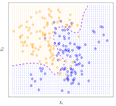
- Big problems: i) Good luck with MC estimation of \(\log \E [\exp(T^\theta)]\); ii) For tail events, estimation is unreliable.
Estimation via Diffusion
MINDE → INFO-SEDD → DDMEC → SOI → TENDE
The Diffusion Idea — An Intuition
Step 1 — Forward process (noising):
Any distribution \(p(x)\) converges to a Gaussian when you repeatedly add small amounts of noise.
\[x_t = e^{-t}\,x_0 + \sqrt{1 - e^{-2t}}\;\varepsilon, \quad \varepsilon \sim \mathcal{N}(0,I)\]
- At \(t=0\): the original data distribution.
- At \(t\to\infty\): pure Gaussian noise.
- The trajectory in between is fully tractable.
Step 2 — Score function = compass toward data:
\[\nabla_x \log p_t(x) \;\;\text{"points toward high-density regions"}\]
- Intuitively: a noisy sample \(x_t\) “knows” where \(x_0\) came from.
- The score is proportional to the optimal denoiser (Tweedie’s formula):
\[\nabla_x \log p_t(x) = \frac{e^{-t}\,\mathbb{E}[x_0 \mid x_t] - x_t}{1 - e^{-2t}}\]
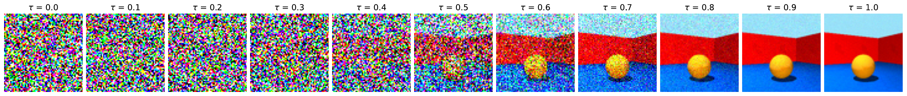
Step 3 — Learn the score, get MI for free:
Train a neural network to denoise (self-supervised): \[\mathcal{L}(\theta) = \mathbb{E}\!\left[\|\text{net}_\theta(x_t, t) - x_0\|^2\right]\]
The gap between two denoisers encodes the KL divergence — and therefore the Mutual Information.
Introduction
Consider a generic random variable \(A\) with probability measure \(\mu^A\)
Build a simple SDE in \([0,T]\) with initial conditions \(\sim \mu^A\): \[\begin{cases}\dd X_t=-X_t\,\dd t+\sqrt{2}\,\dd W_t,\\ X_0=A\sim \mu^A\end{cases}\] where \(W_t\) is a Brownian motion. Informally, \(\dd W_t\sim \mathcal{N}(0,\dd t)\)
For engineers/physicists: \[\frac{\dd X_t}{\dd t}=-X_t+\sqrt{2}\underbrace{\frac{\dd W_t}{\dd t}}_{N_t,\,\text{White Noise}}\] (even simpler: \(X_t=h_t\star N_t\)). We need measure theory and stoch. integrals for nonlinear drifts, etc…
This SDE corresponds to a path measure \(\mathbb{P}^{A}\) (informally events like \(\text{Pr}(X_{0\leq t\leq T}\in \mathcal{S})\)).
Introduction (cont.)
Two SDEs which differ only by initial conditions have KL divergence: \[\KL{\mathbb{P}^{A}}{\mathbb{P}^{B}}=\E_{\mathbb{P}^{A}}\!\left[\log\frac{d\mathbb{P}^{A}}{d\mathbb{P}^{B}}\right]=\E_{\mathbb{P}^{A}}\!\left[\log\frac{d\mu^{A}}{dp^{B}}\right]=\KL{\mu^A}{\mu^B}\]
Disintegration of measures explains why (simply Markov): \[\frac{d{P}^{A}}{d{P}^{B}}=\frac{d\mu^A(X_{0})}{d\mu^B(X_{0})}\]
Introduction (cont.)
Time-reversal \(\hat{X}_t\defeq X_{T-t}\):
- KL between path measures is invariant to time-reversal: \(\KL{\mathbb{P}^{A}}{\mathbb{P}^{B}}=\KL{\hat{\mathbb{P}}^{A}}{\hat{\mathbb{P}}^{B}}\)
- Time reversal of SDE is again an SDE (provided technical conditions [Léonard 2014]): \[\dd \hat X_t=\hat X_t+2 \underbrace{\nabla\log \frac{d\mu_{T-t}^A}{dx}(\hat X_t)}_{\text{score function!}}\dd t+ \sqrt{2}\,\dd \hat W_t\] with \(dx\) the Lebesgue measure.
- Score function \(\leftrightarrow\) Denoiser: \[\nabla\log \frac{d\mu_t^A}{dx}(x)=\nabla\log p^A_t(x)=\frac{\exp(-t)\,{\color{red}\E_{{\mathbb{P}^{A}}}[X_0\mid X_t=x]}-x}{1-\exp(-2t)}\]
Introduction (cont.)
Girsanov theorem: (informal) express the KL between path measures corresponding to two SDEs with different drifts.
\[\KL{\hat{\mathbb{P}}^{A}}{\hat{\mathbb{P}}^{B}}\simeq \E_{\mathbb{P}^{\mu^A}}\!\left[\int_0^T\norm{\nabla\log p^{A}_t(X_t)-\nabla\log p^{B}_t(X_t)}^2\dd t\right]\]
- Combining with \(\KL{\mathbb{P}^{A}}{\mathbb{P}^{B}}=\KL{\hat{\mathbb{P}}^{A}}{\hat{\mathbb{P}}^{B}}\) we can obtain a KL-estimator!
Introduction (cont.)
… but do we know the score? In general, no.
Solution → parametric denoiser (score network): \[\mathcal{L}(\theta)=\E[\norm{\text{net}_\theta(X_t,t)-X_0}^2]\]
Remember \(X_0=A\). Basically a self-supervised procedure:
- Start with a dataset.
- Corrupt it with various levels of noise.
- Try to learn a proper denoiser.
Score-based Generative Models?
The time reversal of diffusion processes is currently one of the main ingredients behind the extremely popular generative AI models (Stable Diffusion, DALL·E, Sora…).
These models are trained to denoise — which means they implicitly learn the score \(\nabla \log p_t(x)\) at every noise level.
Our key insight: we repurpose this powerful machinery — originally developed for image synthesis — to estimate Mutual Information. No generative output needed; we only care about the score functions learned during training.
The billions of dollars invested in scaling diffusion models also advance our ability to compute information-theoretic quantities on complex biological data.
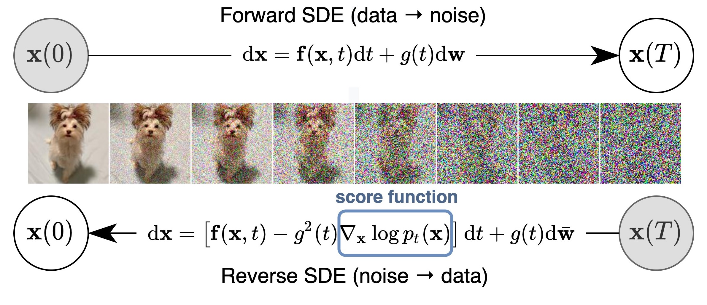
Mutual Information Neural Diffusion Estimation
Mutual Information between two random variables \(A,B\):
\[\textsc{I}(A,B)=\KL{\mu^{A,B}}{\mu^A\mu^B}\]
Two families of diffusion processes: joint (J) and conditional (C).
\[\begin{cases}\dd [X_t,Y_t]^\top =-[X_t,Y_t]^\top \dd t+ \sqrt{2}\,[\dd W_t,\dd W'_t]^\top\\ [X_0,Y_0]^\top\sim \mu^{A,B}\end{cases}\]
The joint and marginal scores are the only ingredients needed — train a single network, query it twice.
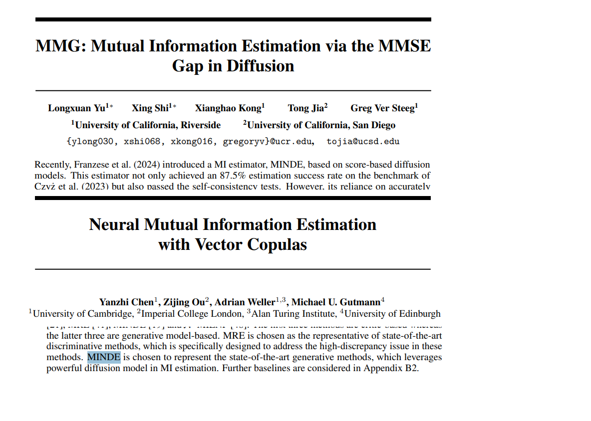
Mutual Information Neural Diffusion Estimation (cont.)
First family, MINDE-C:
Algorithm: Estimate Mutual Information using Diffusion Models
- \([A, B] \sim \mu^{A,B}\) ▷ Sample from joint distribution
- \(t \sim \mathcal{U}[0, T]\) ▷ Uniformly sample \(t\) from \([0,T]\)
- \(X_t \gets \exp(-t)A + \sqrt{1-\exp(-2t)}\,\epsilon\), where \(\epsilon \sim \mathcal{N}(\mathbf{0},\boldsymbol{I})\) ▷ Simulate diffusion
- \(s^{A} \gets \text{net}_\theta([X_t, 0], t, c=0)\) ▷ Compute unconditional score
- \(s^{A_{B}} \gets \text{net}_\theta([X_t, B], t, c=1)\) ▷ Compute conditional score
- \(\hat{I} \gets T\left\| s^{A}-s^{A_{B}} \right\|^2\) ▷ Estimate MI
Why This Gap: an Intuition
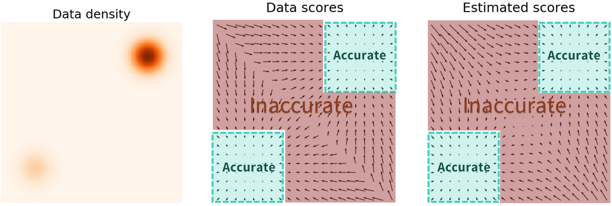
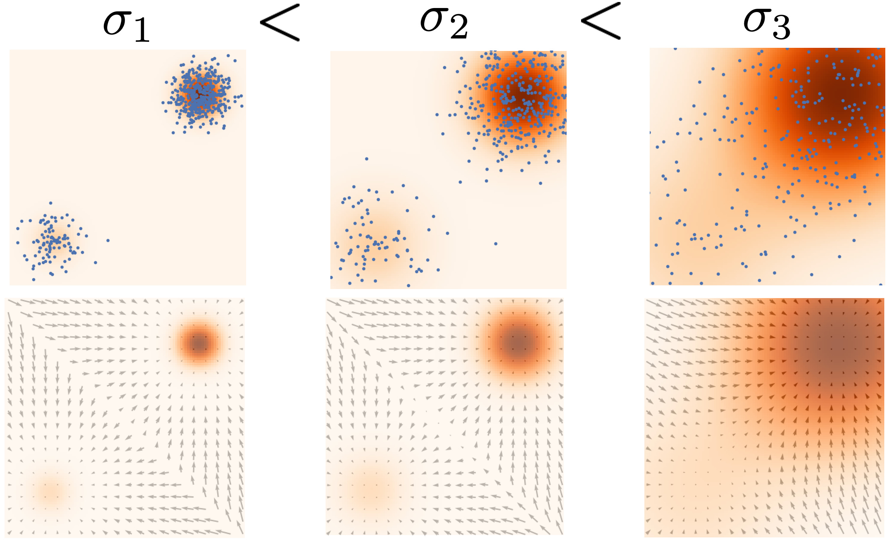
In contrast, discriminative estimators (MINE, InfoNCE) must compute \(\log \mathbb{E}[\exp(T)]\) — a log-sum-exp that is dominated by rare tail events, making variance explode in high dimensions or heavy-tailed settings. Score-based estimation sidesteps this entirely.
Credit: Yang Song, yang-song.net/blog/2021/score
Continuous Time Markov Chains: Conquering Discrete Spaces
- Consider a discrete random variable \(A\in \chi = \{1,\hdots,N\}\) with probability measure \(\mu^A\) (discrete state spaces, conflate with \(p^A\))
- Build a CTMC in \([0,T]\) with initial conditions \(\sim p^A\): \[\frac{d p^A_t(x)}{dt}=Q_t p^A_t(x)\]
- The infinitesimal generator \(Q_t\) is now a matrix, whereas it was a differential operator in \(\mathbb{R}^N\). Think e.g. of Queuing Theory, Epidemic Models, or scRNA-seq count data from organoids at successive developmental stages — each gene expression level is a discrete state, and differentiation is a Markov transition between them.
- We can adapt the previous calculations. Then \(\KL{p_0}{q_0}=\) \[\mathbb{E}\!\left[\int_0^T\sum_{x\neq X_t} Q_{t}(X_t,x)\!\left(K\!\left(\frac{p_t(x)}{p_t(X_t)}\right)+\frac{q_t(x)}{q_t(X_t)}-\frac{p_t(x)}{p_t(X_t)}\log\frac{q_t(x)}{q_t(X_t)}\right)dt\right]\] where \(K(a)=a(\log(a)-1)\). The ratio \(\frac{p_t(x)}{p_t(y)}\) is called the discrete score — approximated with a neural network.
Continuous Time Markov Chains (cont.)
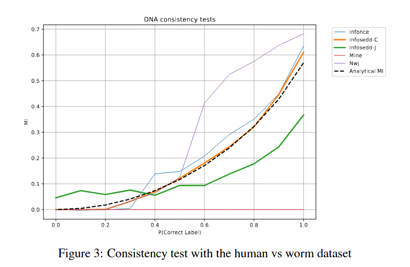
What MI is computed: \(I(\text{Window}_{[i,i+6)};\, \text{Label})\) — the information that a 6-bp DNA window carries about whether the sequence is a promoter or not. The window slides from −200 bp to +51 bp relative to the TSS.
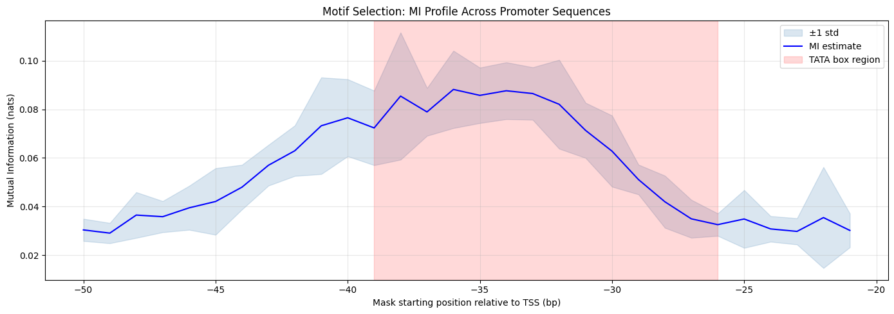
INFO-SEDD Unlocks Discrete Biology
Classical MI estimators assume continuous data — but biology is full of discrete signals. INFO-SEDD handles them natively:
DNA regulatory elements (right figure)
Quantity: \(I(\underbrace{\text{6-bp window}}_{\text{discrete, }|\Sigma|=4},\;\underbrace{\text{promoter?}}_{\text{binary label}})\) estimated as the window slides −200 → +51 bp from the TSS.
- Dataset: Arabidopsis thaliana promoters (EPDnew) vs. matched genomic background — 251-bp sequences, no motif labels provided
- The TATA-box (−39 to −26 bp) emerges as the MI peak without any supervision — the model learns that this window is maximally informative about promoter identity
- What this unlocks: unsupervised, sequence-only discovery of regulatory grammar. Apply the same scan to human neuronal enhancers or organoid ATAC-seq peaks to find which sequence motifs drive cell-type-specific chromatin accessibility.
scRNA-seq count data (potential application)
- Counts \(\in \{0,1,2,\ldots\}\) are integer-valued — standard continuous MI estimators require continuous approximations that distort zero-inflation
- INFO-SEDD computes \(I(\text{gene}_i;\, \text{gene}_j)\) on raw integer counts, no log-normalisation needed
- What this unlocks: nonparametric GRN inference from organoid single-cell atlases without Gaussian assumptions
MI ± 1σ across 80 batches of 16 sequences. Red band: known TATA-box region (−39 to −26 bp). Peak recovered with no motif labels.
Unpaired Data Problem
- Multimodal learning often assumes the availability of paired data.
- However, real-world data is frequently unpaired across modalities.
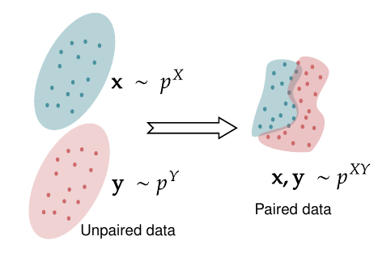
Unpaired Data Problem (cont.)
Given two marginals \(\mu^{X}\) and \(\mu^{Y}\), find a joint distribution \(\mu^{XY}\) that satisfies:
- The marginal constraints: \(\mu^{XY}(S\times \mathbb{R}^N)=\mu^{X}(S),\;\mu^{XY}(\mathbb{R}^N\times S)=\mu^{Y}(S)\)
- Maximise the Mutual Information \(I(X;Y)\) between the two modalities!
What MI is computed: \(I(X;Y) = \KL{\mu^{XY}}{\mu^X \mu^Y}\) — how much knowing one modality reduces uncertainty about the other. Maximising this over all valid couplings finds the pairing where the two distributions are most statistically dependent — i.e., where they share the most information.
Why MI-maximisation, not just Optimal Transport?
Optimal Transport finds a geometrically close coupling — it minimises the cost of moving mass from \(\mu^X\) to \(\mu^Y\). But closeness in gene-expression space \(\neq\) biological correspondence: a chromatin-open cell and an actively-transcribing cell may look distant by \(L^2\) distance yet be the same cell state. MI-maximisation finds the coupling where knowing one modality maximally reduces uncertainty about the other — a biological correspondence principle, not a geometric one.
Unpaired Data: Demonstrated Results
DDMEC can pair any two unpaired distributions — demonstrated on image domains:
Unpaired Data: Application to Single-Cell Multi-Omics
The same principle applies to organoid multi-omics: aligning ATAC-seq (chromatin accessibility) with RNA-seq (gene expression) from the same organoid population — without paired single-cell measurements.
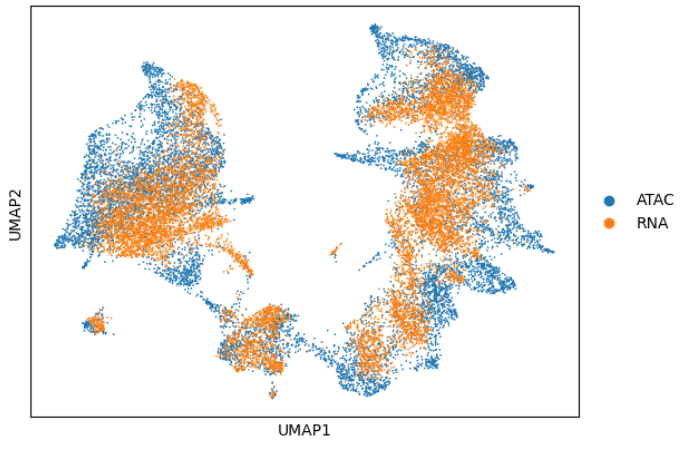
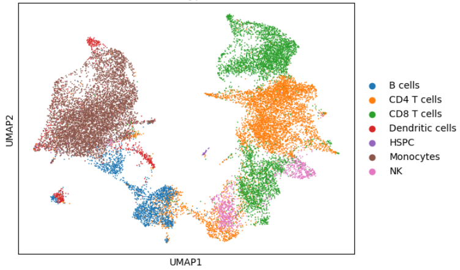
DDMEC applied to PBMC single-cell data. This methodology could directly enable joint chromatin + transcriptome analysis of differentiating organoids without the experimental cost of paired profiling.
Multivariate Information Theory
MINDE → INFO-SEDD → DDMEC → SOI → TENDE
Multimodal Information Theory
- Recently, the concept of MI has been extended to higher-order interactions: Redundant, Synergistic and Unique Information. Seminal works by Williams and Beer (Partial Information Decomposition). Extremely important in consciousness studies.
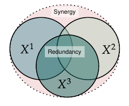
Already used in organoid biology:
- DeepTracing (2024): uses Total Correlation — a key component of O-Information — as a regularization term to disentangle heritable lineage constraints from intrinsic cell-state dynamics in organoid scRNA-seq. TC penalises statistical dependence between latent variables, enforcing clean separation.
- SCENT (Teschendorff et al. 2017): estimates signaling entropy rate from transcriptomic data integrated with a protein-protein interaction network. High entropy → pluripotent; low entropy → committed fate. A practical information-theoretic potency score for stem cells.
Multimodal Information Theory (cont.)
Applications: Multimodal sensory neuroscience — and increasingly, organoid development.
.PNG)
.PNG)
Organoid angle: the same decomposition applied to multi-electrode or calcium imaging data during organoid maturation can reveal whether developing circuits build redundant (fault-tolerant) or synergistic (integrative) coding strategies.
O-Information
Analyzing systems with more than two variables. Example of metric: O-Information.
\[\Omega(X) = T(X) - D(X)\] where \(T(X) = \sum_{i=1}^{N} H(X_i) - H(X)\) is the Total Correlation and \(D(X) = H(X) - \sum_{i=1}^{N} H(X_i | X_{\backslash i})\) is the Dual Total Correlation.
- \(\Omega > 0\): redundancy dominates — each variable independently carries overlapping information
- \(\Omega < 0\): synergy dominates — variables jointly encode information no single one carries alone
Nice properties, but out of reach unless data are Gaussian (or “simple”) and/or discrete. The Hasse diagram (right) shows the full lattice of information atoms underlying the decomposition.
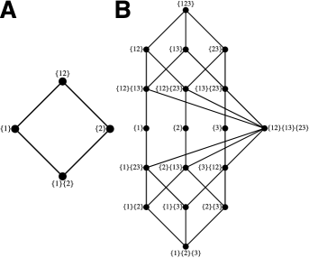
O-Information (cont.)
Real neural data — including organoid MEA recordings — does not follow a known parametric distribution. The marginal density of a single visual cortex area (right) is multimodal, skewed, and heavy-tailed.
Gaussian O-information estimators would be wrong by construction. A nonparametric, score-based approach is the only option that does not require assuming a distribution family.
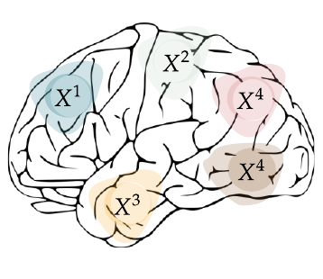
Score-based (Diffusion) Estimation of O-Information
Total Correlation (TC) estimation: \[T(X) = \int p_t(x) \left\| \nabla \log p_t(x) - \sum_{i=1}^{N} \nabla \log p_t(x_i) \right\|^2 dx\, dt\]
Dual Total Correlation (DTC) estimation: \[D(X) = \int p_t(x) \left\| \nabla \log p_t(x) - \sum_{i=1}^{N} \nabla \log p_t(x_i | x_{\backslash i}) \right\|^2 dx\, dt\]
With our implementation, all the ingredients are amortized within a single model.
Why this matters for organoids: DeepTracing (2024) uses TC as a regulariser but must rely on a simplified surrogate — a closed-form Gaussian approximation. Our score-based estimator computes TC exactly for any distribution, making it directly applicable to the heavy-tailed, zero-inflated distributions of organoid scRNA-seq data at scale.
SOI: Synthetic Benchmark Results
Quantity: \(\Omega(X_1,\ldots,X_6)\) on two 6-variable Gaussian systems with known ground truth. Variables \(X_0\)–\(X_2\) are coupled redundantly; \(X_3\)–\(X_5\) synergistically. Coupling strength \(\rho \in [0.05, 0.9]\).
Also computed: gradient \(\partial\Omega/\partial X_i\) — which variables drive the overall redundancy/synergy.
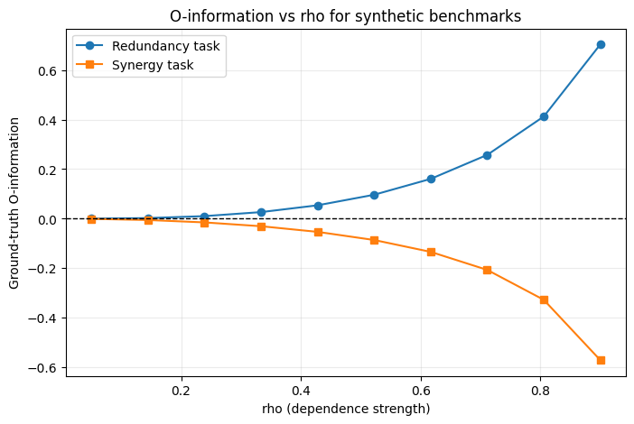
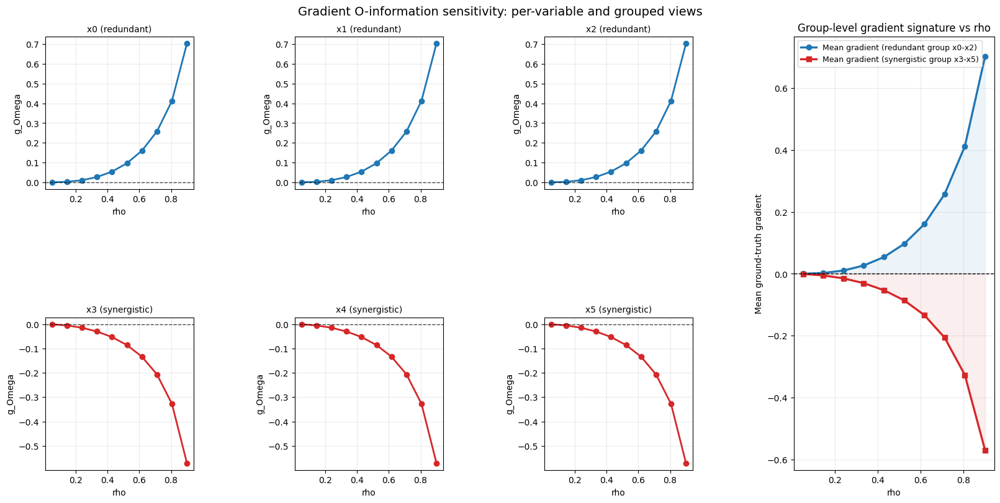
The gradient decomposition is the key novel tool: applied to organoid recordings it would tell you which neurons or areas drive the collective redundancy vs. synergy — not just whether it exists.
Example: Analysis of Mice Brain Activity
Quantity: \(\Omega(X_1,\ldots,X_6)\) where each \(X_i \in \mathbb{R}^5\) is the population response of one of 6 visual cortex areas recorded simultaneously via Neuropixels probes.
Areas: VISp (V1), VISl, VISal, VISrl, VISam, VISpm — 5 neurons × 6 areas = 30-dimensional joint response. Two conditions × 5 time bins after stimulus onset = 10 models.
- Novel stimulus (“change”) → \(\Omega > 0\) (redundancy): each area independently sends the same alerting signal — reliability through independent copies
- Repeated stimulus (“non-change”) → \(\Omega < 0\) (synergy): areas develop a compressed joint code not decodable from any single area alone — efficient coding emerges with familiarity
What this unlocks: no previous estimator could compute O-information on 30-dimensional neural data. The score-based approach handles arbitrary distributions, revealing the redundancy→synergy transition that linear (Gaussian) estimators miss entirely.
Organoid relevance: apply the same analysis to maturing organoid MEA data to find when circuits switch from redundant (immature broadcast) to synergistic (mature integrated) coding — a functional maturity biomarker.
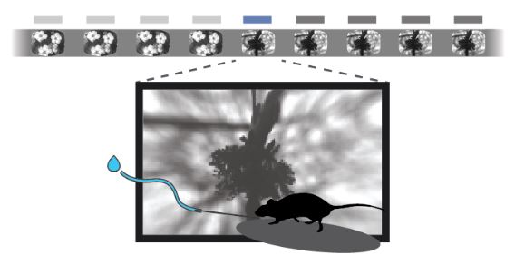
Mice Brain Activity Results
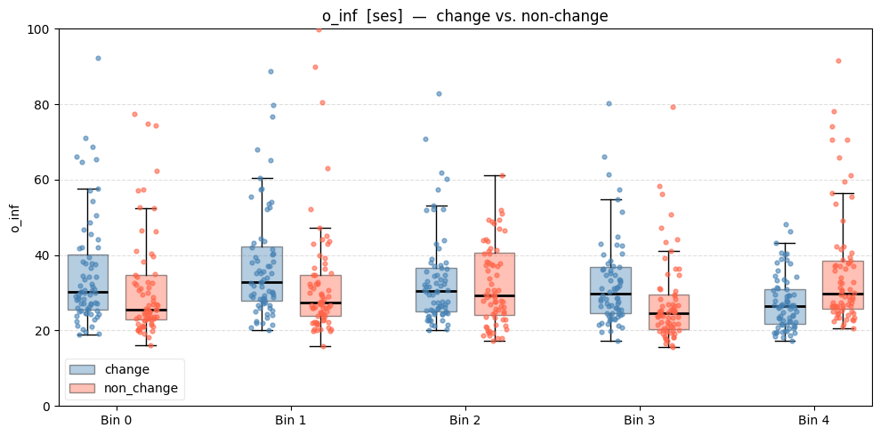
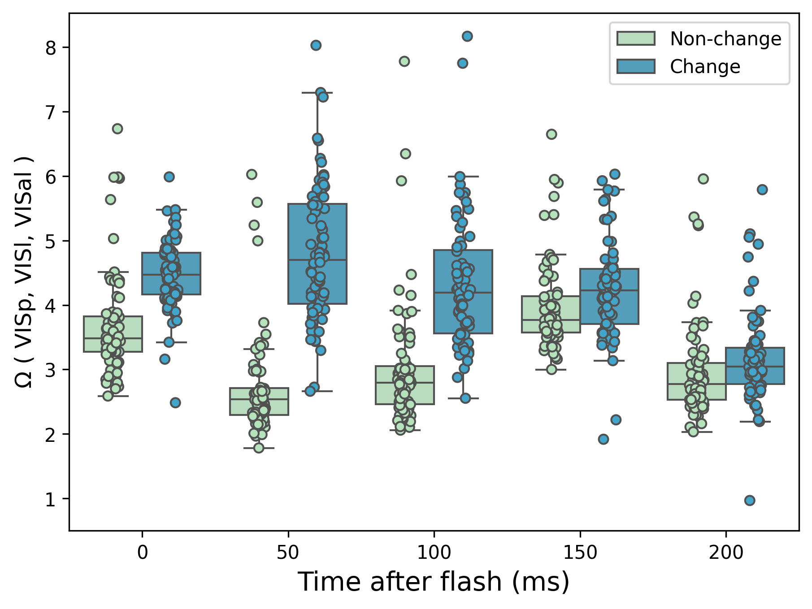
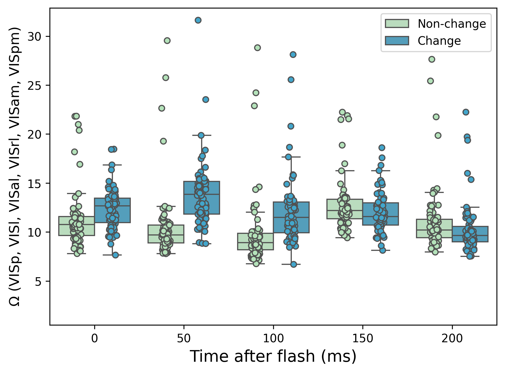
Key finding: novel stimuli elicit a broadcast, redundant response across all visual areas — reliability through independent copies. The effect holds consistently from 3 to 6 areas, suggesting it reflects a general property of the visual hierarchy rather than a local circuit artifact.
Directed Functional Connectivity: Beyond Correlation
A core goal in systems neuroscience: determine not just whether two brain areas are coupled, but who drives whom.
- Granger causality (1969): \(X\) Granger-causes \(Y\) if the past of \(X\) helps predict \(Y\) beyond \(Y\)’s own past — widely used but assumes linear, Gaussian dynamics.
- Transfer Entropy (Schreiber 2000): the nonlinear, model-free generalisation: \[\mathrm{TE}_{X\to Y} = I(Y_t;\, \mathbf{X}_{\text{past}} \mid \mathbf{Y}_{\text{past}})\] Granger causality is a special case of TE under Gaussian assumptions.
- Captures nonlinear, asymmetric information flow — critical for neural circuits where signalling is inherently nonlinear.
- However: existing TE estimators suffer from the curse of dimensionality, require restrictive distributional assumptions…
- We propose TENDE (Transfer Entropy Neural Diffusion Estimation) with Simon Pedro Galeano Munoz and Maurizio Filippone (KAUST)
Emerging Connectivity in Brain Organoids
Muccitri et al. (Cell Reports, 2024) coupled human iPSC-derived neural organoids to high-density microelectrode arrays (HD-MEAs) over 13 weeks of maturation, tracking the emergence of network structure and short-term potentiation — the building blocks of learning and memory.
Key finding: Mutual Information was the primary metric used to weight edges in the functional connectivity network — capturing nonlinear statistical dependencies between electrodes that reflect genuine neuronal communication, invisible to Pearson correlation.
- Scale-free (critical) network dynamics emerge around week 8–10
- Short-term potentiation develops alongside organised connectivity
- MI-weighted networks successfully distinguished responsive from non-responsive organoid batches
Transfer Entropy extends this to directed connectivity: \[\mathrm{TE}_{i\to j} = I\!\left(X_t^{(j)};\, X_{\text{past}}^{(i)} \;\middle|\; X_{\text{past}}^{(j)}\right)\] tracking which electrode drives which as the circuit matures.
Uthamacumaran et al. (2024): MI-based functional connectivity applied to aneural Xenopus morphogenetic tissue — showing these tools generalise to any developing biological system.
Why standard methods fail here:
Granger causality assumes linear, Gaussian dynamics — calcium transients and MEA signals are neither.
TENDE estimates TE nonparametrically via score matching, handling the nonlinear, heavy-tailed dynamics of organoid electrical activity.
Transfer Entropy: Formulation
- Let \(\{X_t\}\) and \(\{Y_t\}\) denote discrete time stochastic processes.
- Define: \[\begin{cases}\begin{aligned}\mathbf{Y}_{t-\ell} &= [Y_{t-1},\,\dots,\,Y_{t-\ell}] \\ \mathbf{X}_{t-k} &= [X_{t-1},\,\dots,\,X_{t-k}]\end{aligned}\end{cases}\] for some natural numbers \(\ell, k\).
- The TE from \(\{X_t\}\) to \(\{Y_t\}\) is given by: \[\mathrm{TE}_{X\to Y}(k,\ell) = I\!\left(Y_t;\,\mathbf{X}_{t-k}\mid\mathbf{Y}_{t-\ell}\right)\]
- TE quantifies how much \(Y_t\) depends on the past of \(\{X_t\}\) once its own past is already known.
Transfer Entropy: Example
Synthetic validation: coupled OU process with known unidirectional coupling (\(Y\!\to\!X = 0.5\), \(X\!\to\!Y = 0\)). Quantity: \(\mathrm{TE}_{Y\to X}(k,\ell) = I(X_t;\, Y_{t-k} \mid X_{t-\ell})\). TENDE recovers the correct asymmetry.
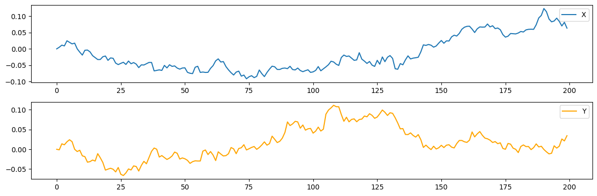
Real physiological data: 10-minute recording (~6000 samples at ~10 Hz), z-score standardised.
Quantity computed: \(\mathrm{TE}_{\text{resp}\to\text{HR}}(k, \ell{=}2)\) and \(\mathrm{TE}_{\text{HR}\to\text{resp}}(k, \ell{=}2)\) for \(k \in \{2,4,6,8,10\}\) seconds — how much does 2 steps of one signal’s history reduce uncertainty about the other’s next value, beyond the target’s own history?
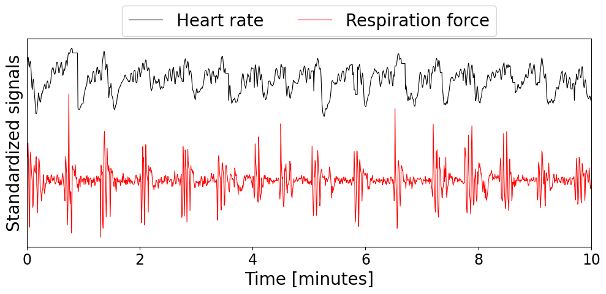
TENDE Results
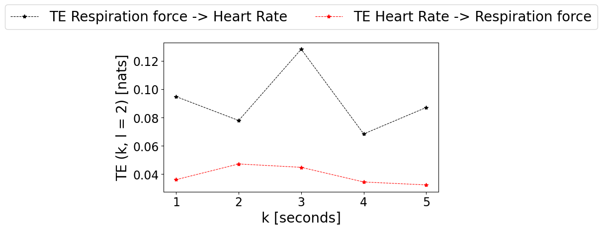
What is recovered: respiratory sinus arrhythmia (RSA) — breathing modulates heart rate more than the reverse. Respiration pacemaking in the brainstem overrides cardiac autonomic control, a nonlinear effect invisible to linear Granger causality.
Why previous methods failed: Granger requires Gaussian residuals; KNN estimators need \(O(n^2)\) computation in high dimensions. TENDE — score-based, sample-efficient — gives stable estimates at 6000 samples with 1000 MC iterations.
Organoid application: applied to organoid MEA recordings, TENDE quantifies \(\mathrm{TE}_{A\to B}\) between any electrode pair — mapping the causal wiring diagram of emerging circuits and tracking how it evolves over weeks of maturation.
Conclusions
In Summary
A unified framework — score-based diffusion processes — enables scalable, nonparametric estimation of five information metrics that were previously intractable for real biological data:
| Method | What it measures | Key biological result |
|---|---|---|
| MINDE | MI (continuous) | Foundational building block — enables INFO-SEDD, DDMEC, SOI, TENDE |
| INFO-SEDD | MI (discrete) | DNA regulatory elements; scRNA-seq GRN inference |
| DDMEC | Max-MI coupling | ATAC-seq / RNA-seq alignment without paired cells |
| SOI | Synergy & redundancy | Redundant→synergistic transition in visual cortex |
| TENDE | Directed information flow | Causal architecture of developing neural circuits |
The organoid field is already using these metrics — we provide the scalable estimators:
- Muccitri et al. (2024): MI → organoid functional connectomes from HD-MEA
- Weinreb et al. (2020): MI between sister cells → hidden fate determinants
- DeepTracing (2024): Total Correlation → disentangling lineage from cell state
- Clonotrace (2025): MI → joint lineage + transcriptomic analysis
Going deeper (backup slides available):
- Formal measure-theoretic derivations and proof sketches
- Convergence analysis: sample complexity, model capacity requirements
- Extended numerical validation across additional benchmark families
- Thermodynamic integration / Feynman-Kac alternative derivation
Try It Yourself
All results shown in this talk were produced by Colab notebooks — runnable in your browser, no installation required.
Available notebooks:
| Method | What you can run |
|---|---|
| INFO-SEDD | TATA-box discovery on Arabidopsis promoters |
| SOI | Synthetic redundancy/synergy benchmarks |
| SOI | VBN visual cortex O-information |
| TENDE | TE on coupled OU + heart rate/respiration |
All notebooks load pretrained checkpoints — results in minutes, not hours.
Repository: github.com/giuliofranzese/Cajal
The same notebooks can serve as templates for your own data: substitute the data-loading cell, adjust dimensions, run. The estimators make no assumption about your distribution.
Questions, issues, collaborations: giulio.franzese@eurecom.fr
References
- Franzese et al, Mutual Information Neural Diffusion Estimation, ICLR 2024
- Bounoua et al, S\(\Omega\)I: Score-based O-Information Estimation, ICML 2024
- Wang et al, Information Theoretic Text-to-Image Alignment, ICLR 2025
- Wang et al, RFMI: Estimating Mutual Information on Rectified Flow for Text-to-Image Alignment, ICLR (Workshop) 2025
- Foresti et al, INFO-SEDD: Continuous Time Markov Chains as Scalable Information Metrics Estimators, ICLR (Workshop) 2025
- Bounoua et al, Learning to Match Unpaired Data with Minimum Entropy Coupling, ICML 2025
- Franzese et al, Continuous Time Functional Diffusion Processes, NeurIPS 2024
- Franzese et al, Generative diffusion models in infinite dimensions: a survey, Philosophical Transactions A 2025
- Munoz et al, TENDE: Transfer Entropy Neural Diffusion Estimation, arXiv preprint
Organoid & biology literature:
- Muccitri et al, Human neural organoid microphysiological systems show the building blocks necessary for basic learning and memory, Cell Reports 2024
- Weinreb et al, Lineage tracing on transcriptional landscapes links state to fate during differentiation, Science 2020
- Teschendorff et al, Single-cell entropy for quantifying differentiation potency (SCENT), Nature Protocols 2017/2021
- Uthamacumaran et al, Revealing non-trivial information structures in aneural biological tissues via functional connectivity, 2024
- DeepTracing: A deep generative framework for disentangling intrinsic states from lineage constraints, 2024/2025
- Clonotrace: A framework for integrating lineage and transcriptomic information, 2024/2025
Backup
An Informal Introduction
An informal introduction
Probability Spaces
- A probability space \((\Omega, \mathcal{F}, \mathrm{P})\) consists of:
- \(\Omega\): The sample space (set of all possible outcomes).
- \(\mathcal{F}\): A \(\sigma\)-algebra, a collection of subsets of \(\Omega\) representing events.
- \(\mathrm{P}\): A probability measure that assigns a number between 0 and 1 to each event in \(\mathcal{F}\).
Understanding \(\sigma\)-Algebra in Simple Terms
- A \(\sigma\)-algebra can be understood as defining the granularity of information available.
- It must satisfy:
- The whole sample space \(\Omega\) is included.
- If an event is in \(\mathcal{F}\), its complement must also be in \(\mathcal{F}\).
- If a countable sequence of events is in \(\mathcal{F}\), their union must also be in \(\mathcal{F}\).
- Example: Rolling a dice.
- \(\Omega = \{1,2,3,4,5,6\}\).
- A possible \(\sigma\)-algebra: \(\{\emptyset, \Omega, \{1,3,5\}, \{2,4,6\}\}\) (representing even and odd outcomes).
Understanding \(\sigma\)-Algebra (cont.)
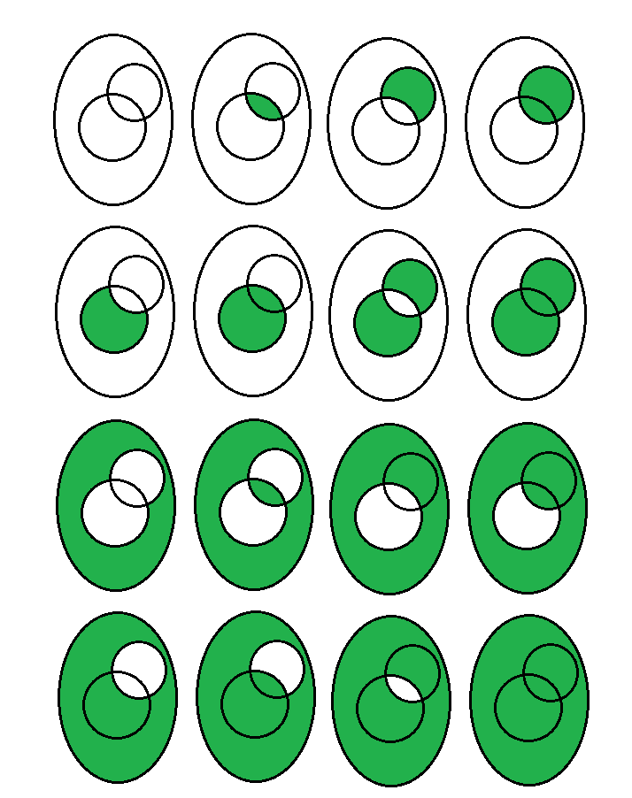
Example of \(\sigma\)-algebra
Random Variables as Mappings
- A random variable \(X\) is a function that maps outcomes from the sample space \(\Omega\) to real numbers: \[X: \Omega \to \mathbb{R}\]
- Example 1: Rolling a dice. If \(\omega\in\Omega=\{1,2,3,4,5,6\}\), then \(X(\omega)=\omega\).
- Example 2: Defining an odd/even variable. \(Y(\omega)=1\) if \(\omega\) is odd, \(Y(\omega)=0\) if \(\omega\) is even.
Random Variables as Mappings (cont.)
- A random variable must be measurable with respect to a given \(\sigma\)-algebra to be well-defined.
- Example:
- With \(\sigma\)-algebra \(\{\emptyset,\Omega,\{1,3,5\},\{2,4,6\}\}\), \(Y\) (odd/even) is measurable.
- However, \(X\) (exact roll outcome) is not measurable — a finer \(\sigma\)-algebra is needed.
- Intuitive interpretation: Doob’s lemma: A random variable is measurable with respect to a \(\sigma\)-algebra if and only if there exists a function that depends only on elements of the algebra.
Introduction to Stochastic Processes
- A stochastic process is a collection of random variables indexed by time: \[Y_t: \Omega \to \mathbb{R}, \quad t \geq 0\]
- It describes how a system evolves randomly over time.
- Examples:
- Stock prices.
- Population dynamics.
- Temperature variations.
Filtration and Adapted Processes
- A filtration is a sequence of \(\sigma\)-algebras representing growing information over time: \[\mathcal{F}_0 \subseteq \mathcal{F}_1 \subseteq \mathcal{F}_2 \subseteq \dots\]
- Intuitively, it models the accumulation of knowledge as time progresses.
- A process is adapted if at each time instant it is measurable with respect to the filtration.
Probability Measure
(Informal, not complete) In the framework of measure theory, a probability measure \(\mu\) is a mapping from subsets \(\{S_i\}_i\) of a given sample space \(\Omega\) such that:
- It is positive: \(\mu(S_i)\geq 0\)
- For disjoint sets \(S_i,S_j\) (\(S_i\cap S_j=\emptyset\)) it holds \(\mu(S_i\cup S_j)=\mu(S_i)+\mu(S_j)\).
- Its “integral” is equal to one: \(\mu(\Omega)=1\).
Familiar examples:
- \(\Omega=\mathbb{R}\), Gaussian probability \(\mu(dx)=p(x)dx=\frac{1}{\sqrt{2\pi}}\exp(-\frac{x^2}{2})dx\)
- \(\Omega=\{0,1\}\), Bernoulli RV \(\mu(\{0\})=\mu(\{1\})=\frac{1}{2}\)
Definition of SDEs
- A stochastic differential equation (SDE) is a particular class of stochastic processes.
- A general diffusion process on a probability space \((\Omega,\mathcal{F},\mathrm{P})\) is given by: \[Y_t(\omega) = Y_0(\omega) + \int_0^t H(Y_s(\omega),t)\,ds + W_t(\omega)\] where:
- \(Y_t\) is the stochastic process.
- \(H(Y_t(\omega),t)\) is the drift term.
- \(W_t\) is a Brownian motion, representing Gaussian noise.
- It only makes sense when considered with respect to a filtration \((\mathcal{F}_t)_{t\geq 0}\), representing the available information over time.
Formal MINDE Derivation
- Consider a probability space \((\Omega,\mathcal{F},\mathbb{P})\), together with a growing filtration \(\mathcal{F}_t\)
- Consider a generic random variable \(A\) (\(\mathcal{F}_0\)-measurable) with probability measure \(\mu^A(dx)\)
- Build a simple SDE in \([0,T]\) with initial conditions \(\sim\mu^A\): \[\begin{cases}\dd X_t=-X_t\,\dd t+\sqrt{2}\,\dd W_t,\\X_0=A\sim\mu^A\end{cases}\] where \(W_t\) is an \(\mathcal{F}_t\) Brownian motion.
- This SDE corresponds to a path measure \(\mathbb{P}^{A}\).
- Two SDEs which differ only by initial conditions have KL divergence: \[\KL{\mathbb{P}^{\mu^A}}{\mathbb{P}^{\mu^B}}=\E_{\mathbb{P}^{\mu^A}}\!\left[\log\frac{d\mathbb{P}^{\mu^A}}{d\mathbb{P}^{\mu^B}}\right]=\KL{\mu^A}{\mu^B}\]
Formal MINDE Derivation (cont.)
Time-reversal \(\hat{X}_t\defeq X_{T-t}\):
- KL is invariant to time-reversal: \(\KL{\mathbb{P}^{\mu^A}}{\mathbb{P}^{\mu^B}}=\KL{\hat{\mathbb{P}}^{\mu^A}}{\hat{\mathbb{P}}^{\mu^B}}\)
- Time reversal of SDE is again an SDE [Léonard 2014]
- Score function \(\leftrightarrow\) Denoiser (same as before)
Girsanov theorem:
\[\KL{\hat{\mathbb{P}}^{\mu^A}}{\hat{\mathbb{P}}^{\mu^B}}\simeq \E_{\mathbb{P}^{\mu^A}}\!\left[\int_0^T\norm{\nabla\log p^{A}_t(X_t)-\nabla\log p^{B}_t(X_t)}^2\dd t\right]\]
- Combining with time-reversal invariance → KL-estimator!
- Initial conditions \(\KL{\mu^A_T}{\mu^B_T}\) should be negligible (Bakry-Emery condition / ergodicity [Collet, Malrieu 2008])
Experimental Results
MINDE variants:
- Consistently outperform all competitors on standard benchmarks.
- Are capable of accurately estimating MI in the challenging High MI benchmarks:
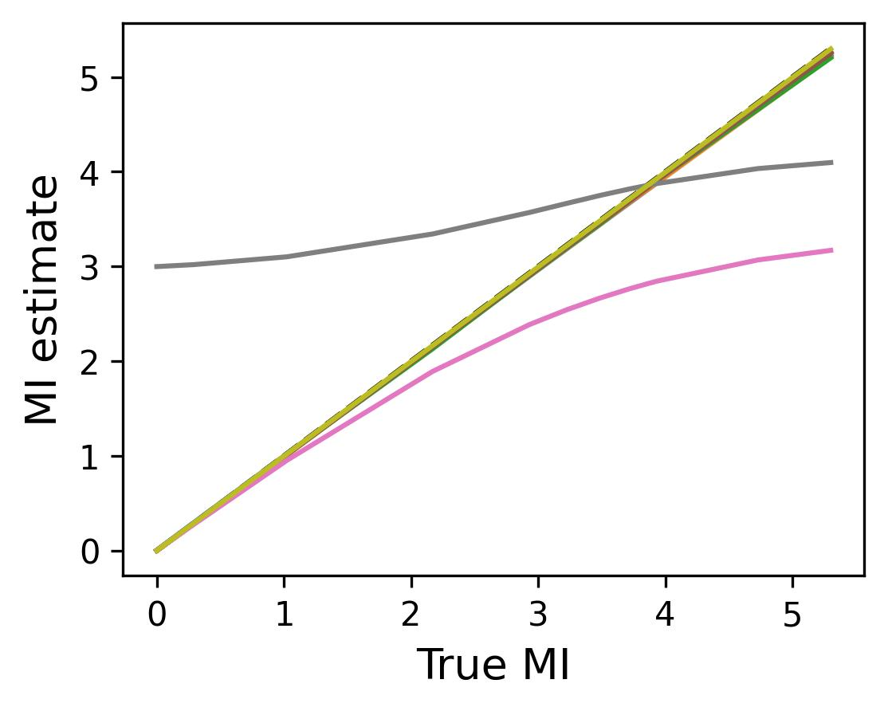
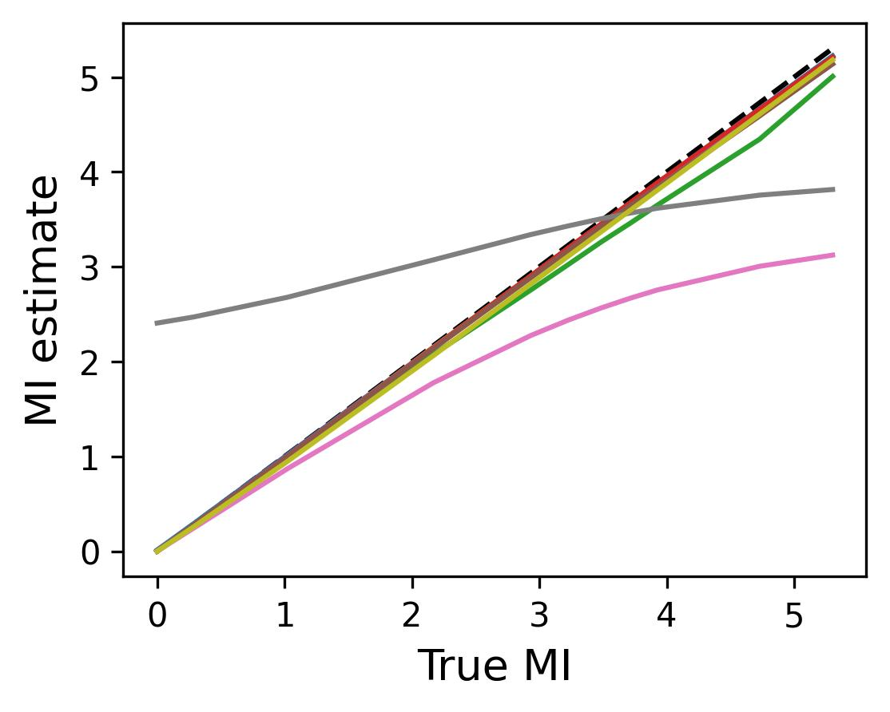
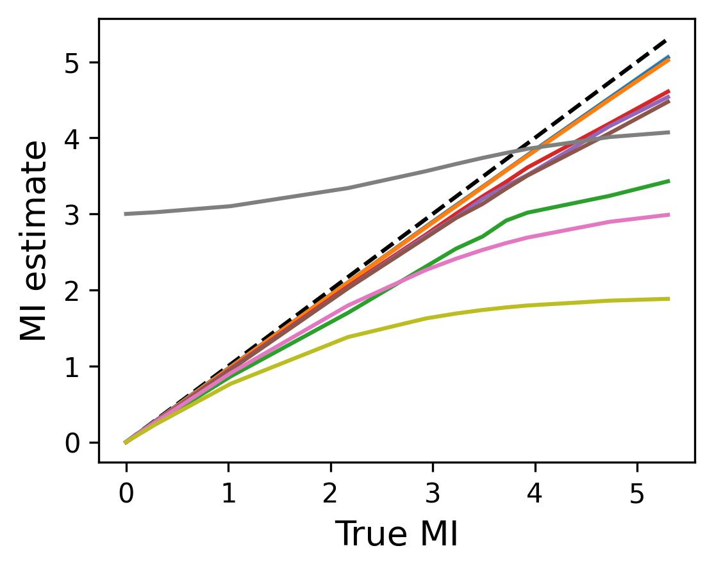
Experimental Results (cont.)
Pass the self-consistency tests:
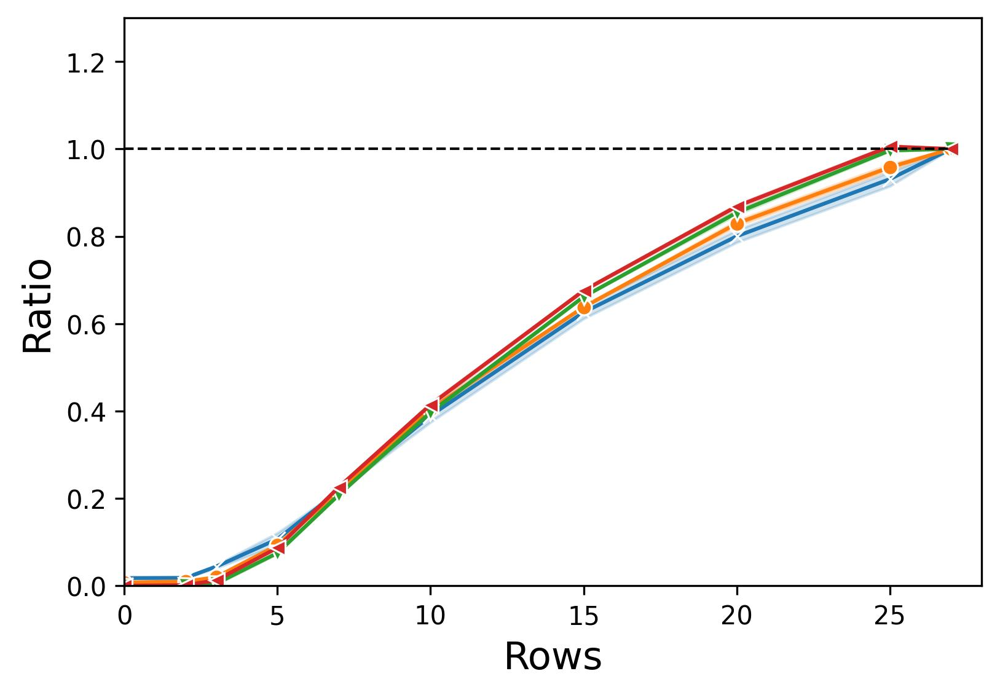
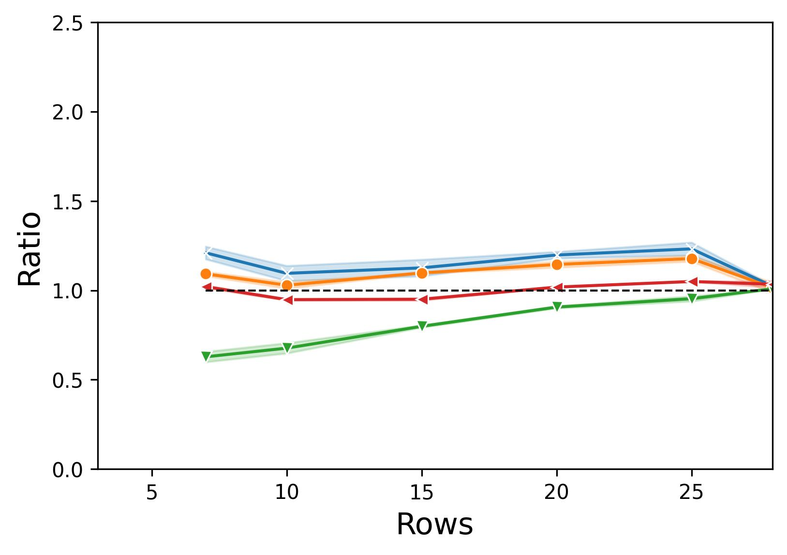
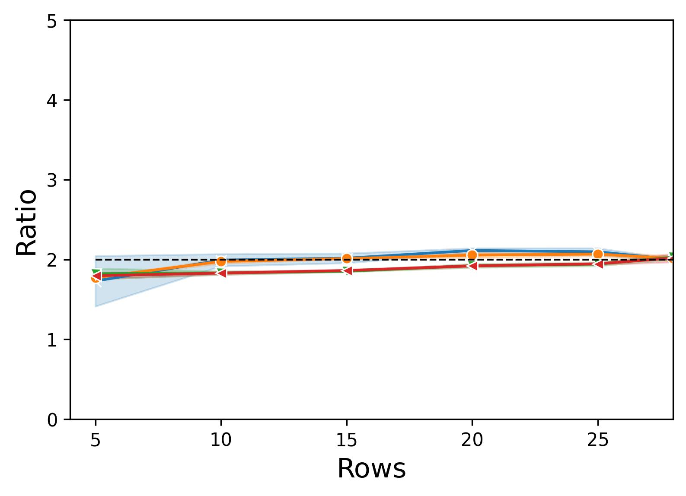
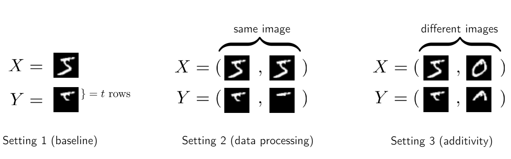
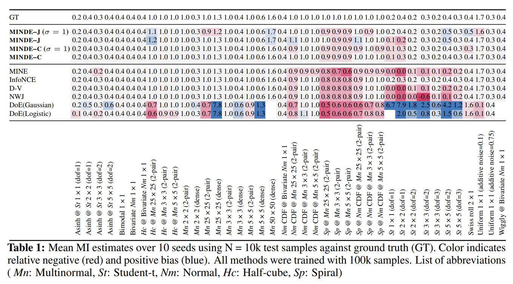